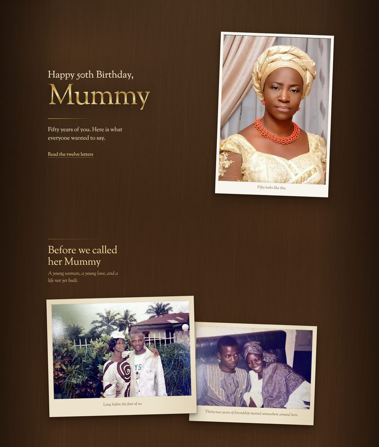
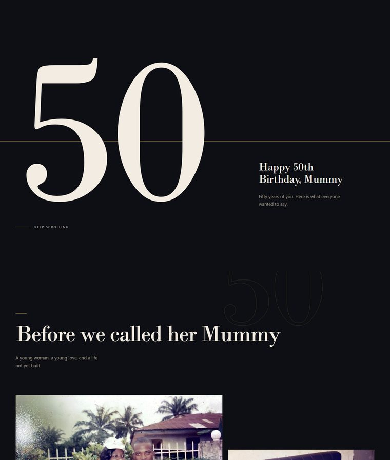
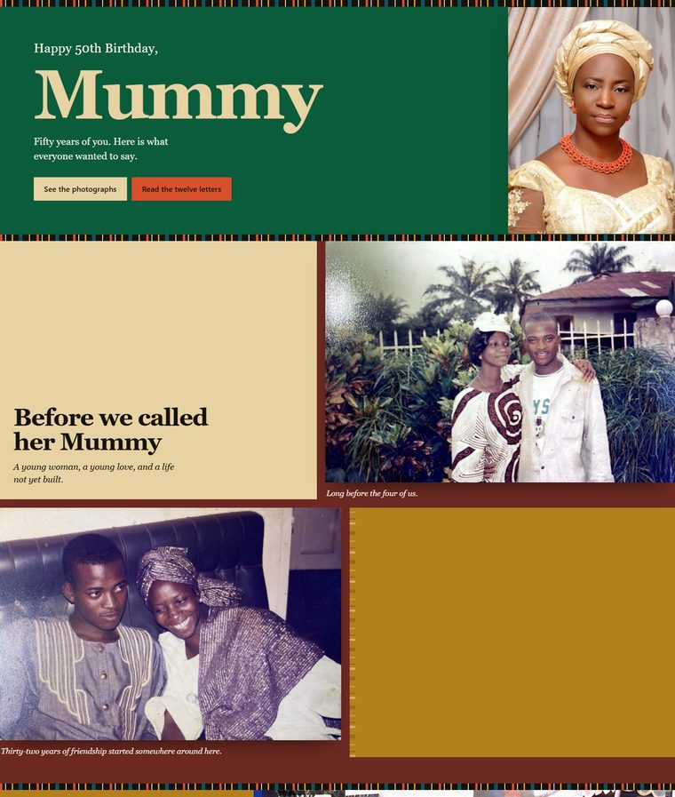

Her fiftieth
Same eighteen photographs, same twelve letters, three different worlds. Open each one, then pick the one she should wake up to.

OneHer life spread out as real prints on warm walnut, tilted and overlapping. The letters are paper you can almost feel: laid stock, ruled notebook, a folded crease.
Open this one
TwoThe way a magazine would treat a feature about someone who matters. An enormous 50, a strong asymmetric grid, and a lot of quiet around every photograph.
Open this one
ThreeBuilt from the colours she actually wears in these photographs. Gele green, coral, ultramarine and gold, blocked like aso ebi for a family celebration.
Open this one